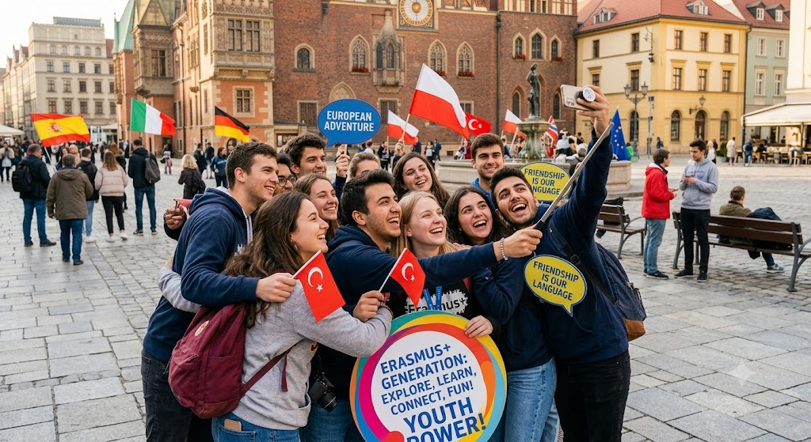
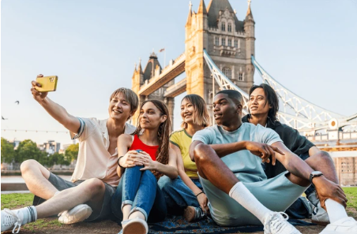
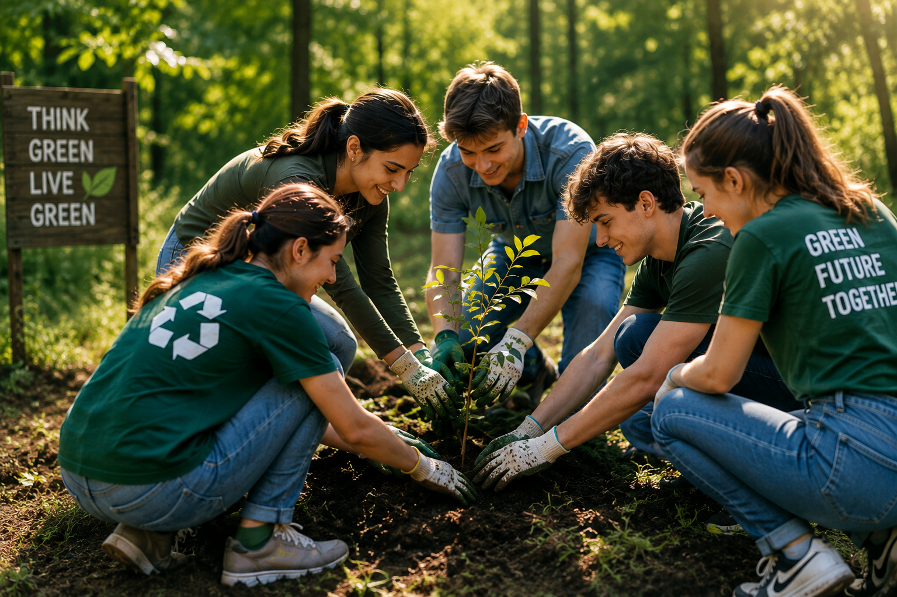
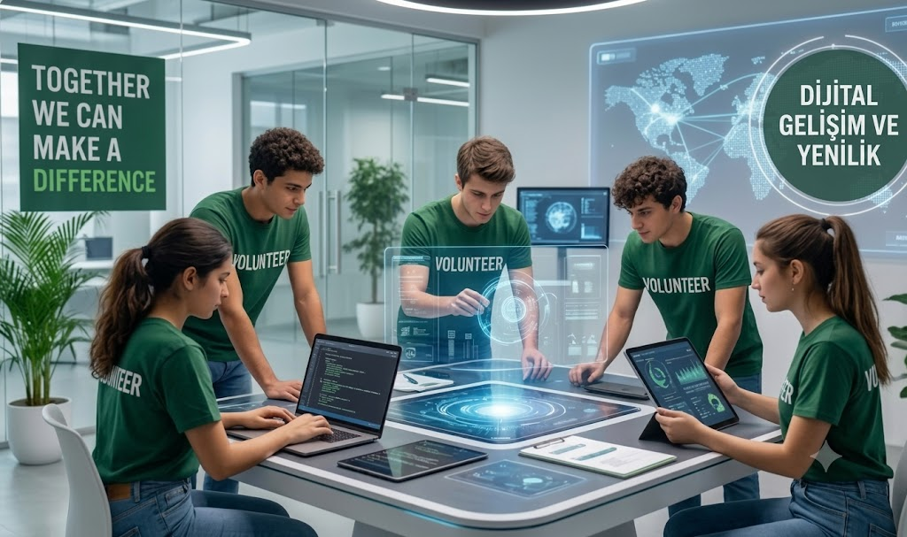
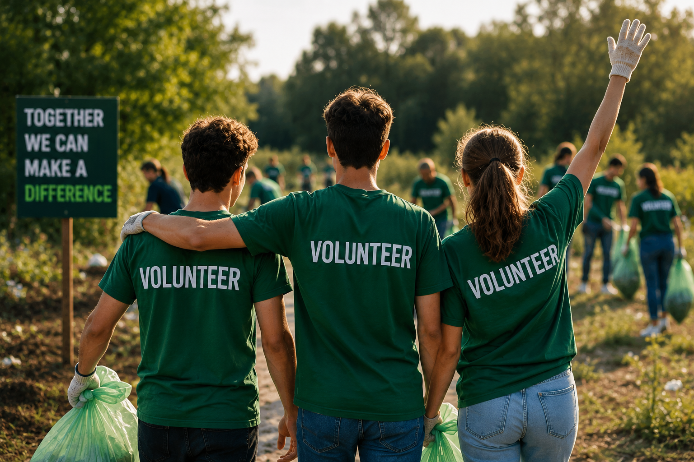

Sınırları aşmaya, küresel bir vizyon kazanmaya ve potansiyelinizi keşfetmeye hazır mısınız? YANKI kapsamındaki fırsatları keşfedin, geleceğinizi bugünden şekillendirin.
Programları İncele

YANKI; Erasmus+, gönüllülük, sürdürülebilirlik ve uluslararası iş birliği aracılığıyla gençleri güçlendirmeyi amaçlayan bir gençlik girişimidir. Öğrenmenin yalnızca sınıflarla sınırlı olmadığına ve her gencin kendini geliştirebileceği fırsatlara erişmeyi hak ettiğine inanıyoruz.
KeşfetHer proje; yeni dostluklar, yeni beceriler ve yeni fırsatlar yaratıyor.
Gençleri Erasmus+ ve uluslararası hareketlilik fırsatlarıyla buluşturmak
Doğa, çevre ve sürdürülebilir yaşam konusunda farkındalık oluşturmak
Gençlerin fikirlerini paylaşabilecekleri ve aktif rol alabilecekleri alanlar yaratmak
Gençlerin dijital medya, teknoloji ve üretim becerilerini geliştirmek
YANKI olarak gençlerin gelişimini destekleyen, topluma ve çevreye katkı sağlayan projeler üretmeyi hedefliyoruz.

Ağaç dikimi, çevre çalışmaları, geri dönüşüm ve sürdürülebilir yaşam üzerine projeler geliştirmek.

Gençlerin dijital medya, yapay zekâ, teknoloji ve içerik üretimi alanlarında kendilerini geliştirmelerini desteklemek.

Ayrımcılığa karşı farkındalık yaratmak ve herkes için daha kapsayıcı alanlar oluşturmak.
Yaklaşan Erasmus+, ESC ve gençlik fırsatlarını keşfet, yeni deneyimlere doğru ilk adımını at.
Tema: Gençlik katılımı • Avrupa Gençlik Hedefleri • Gönüllülük • Yaygın öğrenme
Tema: Avrupa hareketliliği • Gençlik çalışmaları • Eğitim • Yaygın öğrenme
Tema: Yapay zekâ • Teknoloji • Etik • İnovasyon • Kültürlerarası öğrenme
YANKI olarak gençlik alanında çalışan kuruluşlar, üniversiteler, yerel yönetimler ve gençlik gruplarıyla bağlantılar kurmayı ve ortak çalışmalar geliştirmeyi hedefliyoruz.
Öğrenme, gönüllülük ve Erasmus+ fırsatlarıyla değişime ilham veren uluslararası gençlik topluluğumuzun bir parçası ol.
YANKI'ya Katıl